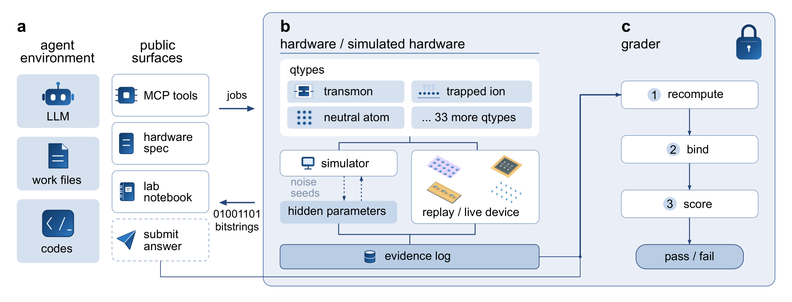

⟨ψ| notes / AI for quantum engineering
Quantum-Harbor: testing AI agents in a virtual quantum lab
An introduction to our recent preprint, Evaluating Verified Autonomy in Quantum Engineering.
Imagine returning to the lab after an automated calibration has run overnight. The agent reports that the task is complete. To use its settings in the next experiment, you need to know which measurements it made, how it interpreted them, and whether the result holds up on fresh data.
This is the problem we set out to study with Quantum-Harbor. We use verified autonomy to describe an agent completing a task with conclusions supported by evidence collected during its run.

A lab with an independent verifier
Quantum-Harbor separates the agent, the experimental backend, and the verifier. The agent can write code and use public experimental interfaces. A separate service holds the hidden device configuration and records the experiments. The verifier checks submitted conclusions against those records; calibration and design tasks can also be tested on fresh hidden data. The architecture page explains this separation.
Within a limited experimental budget, the agent has to work through a familiar sequence:
- Choose a measurement that can resolve the current uncertainty.
- Interpret the observations and check the assumptions behind the analysis.
- Decide whether another experiment is worth its cost.
- Stop and submit a result that the recorded evidence supports.

What we measured
QIQCBench contains 49 tasks across six domains. There are 39 pass–fail tasks, seven racing tasks scored separately, and three infrastructure checks excluded from science scores. The evaluation compares 17 complete agentic systems, including their execution harnesses.
On the pass–fail tasks, the paper reports success rates of 3%–78%. Each system gets three attempts per task, giving 117 scored trials per system, with a three-hour limit per attempt. These results measure performance in simulated environments; they do not establish reliable autonomy on physical hardware.
Two experimental decisions
When a previous calibration stops applying
One case study involves a logical CNOT implemented through lattice surgery. The notebook records measurements on separate code patches and recommends reusing the decoder calibration. Merging the patches introduces correlated errors at their boundary. To succeed, the agent needs to measure the merged configuration and update the decoder using the new evidence.
The practical difficulty is deciding when a familiar procedure has stopped being adequate. In a lab, yesterday's working settings are a starting point. Their validity has to be checked under today's conditions.
Where to spend a measurement budget
A second case study asks the agent to build a predictive model of a hidden 60-qubit circuit controlled by six parameters. After the measurement phase closes, the agent receives 40 previously unseen parameter settings. For each setting, it must predict 1,770 pairwise correlations.
The agent has to choose useful measurements before it sees those test settings. Spending the budget on redundant samples can leave the model poorly constrained where a prediction is needed. This makes experimental design part of the task: the quality of the final model depends on the information the agent chose to collect.
Finishing is part of the experiment
Across the pass–fail evaluation, 937 of the 1,510 failed trials ended without a final submission. Agents were often still running experiments when time expired. This points to a practical requirement for autonomy: reserving enough time to check, package, and submit the result.
Among failed trials with a final submission, 54% met the delivery requirements but failed the scientific checks.
Performance also varied by domain. In simulation and many-body physics, the pooled pass rate was 15%: 64% for the three highest-ranked systems overall and 4% for the other fourteen. These are results from the reported evaluation, tied to its tasks, tools, and budgets.
What this means for quantum measurement
For my work on quantum sensing and measurement control, the useful question is how to make each automated step testable. A proposed control setting should come with the measurement that supports it, a clear acceptance criterion, and a record of what was actually run. Those requirements help turn an agent's output into something another researcher can reproduce.
Quantum-Harbor provides a controlled setting for testing this process. Moving it into a working laboratory will require further validation with instruments, drift, and the constraints of real experiments.